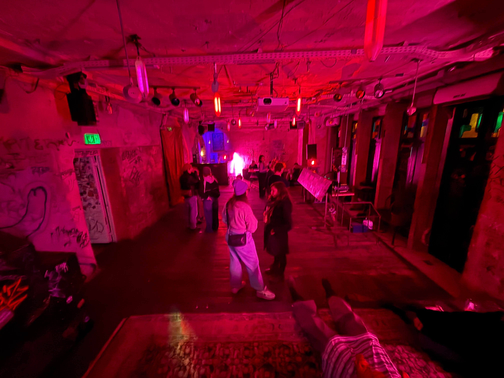
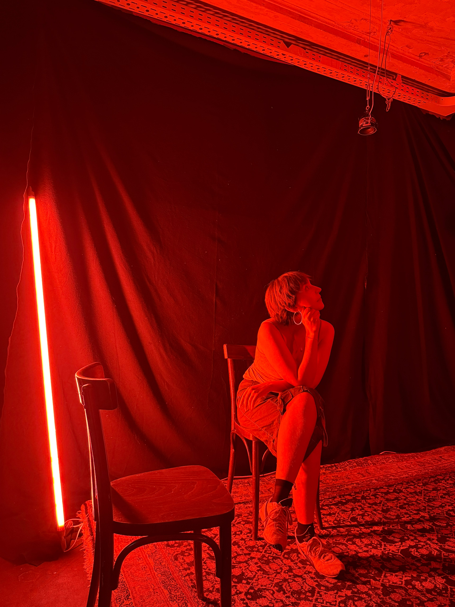
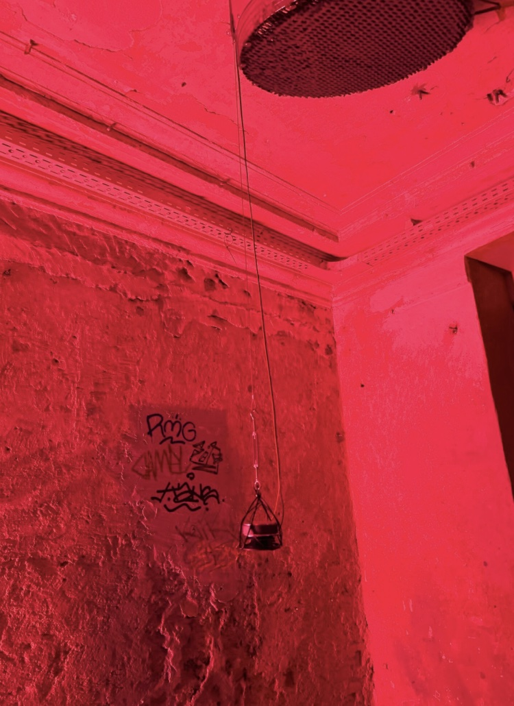
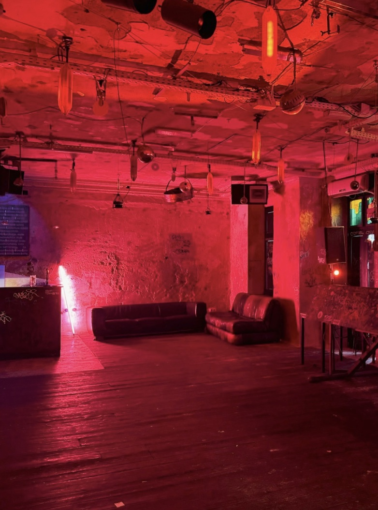
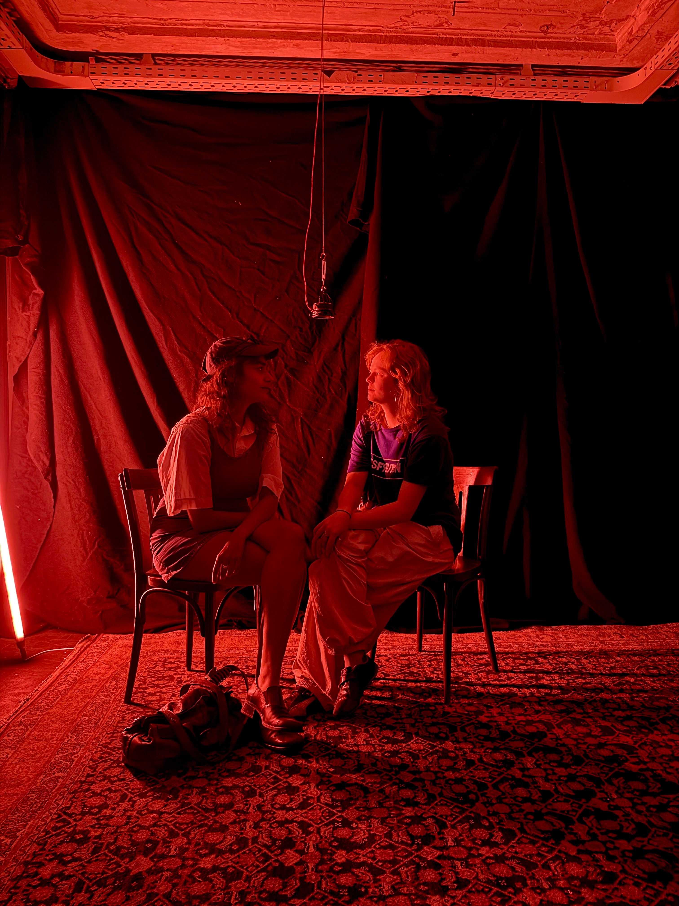
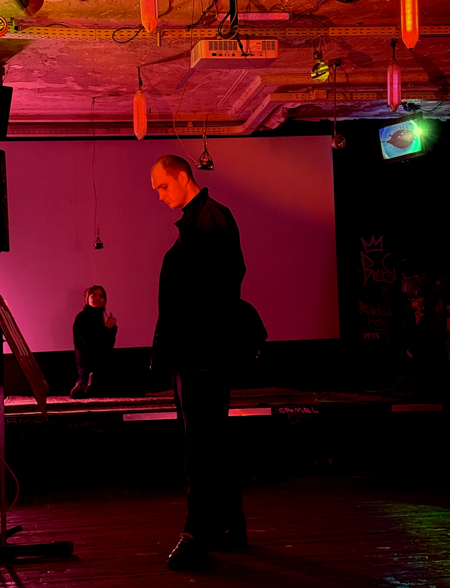
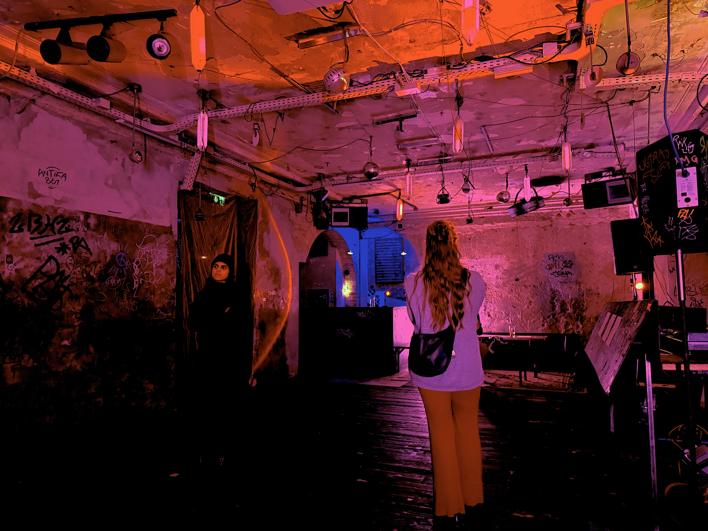
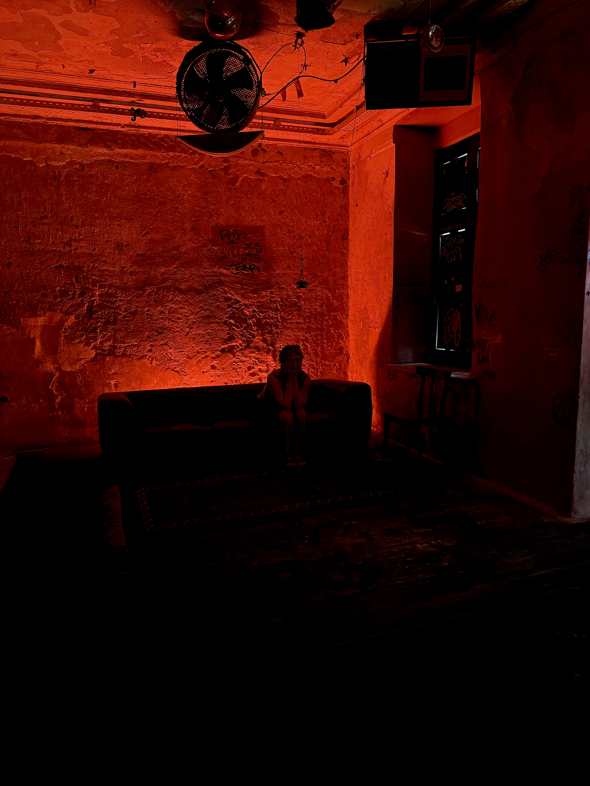
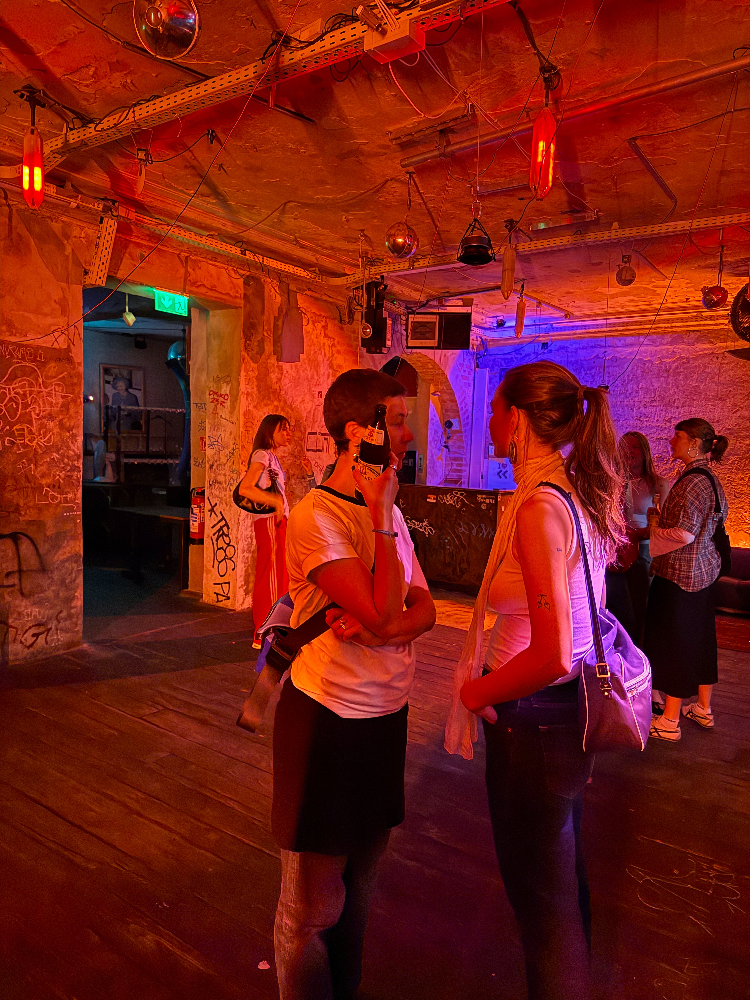

UN/SILENCED explores Female Rage as both a personal emotion and a collective response to patriarchal structures. The immersive audio installation transforms individual experiences of anger, frustration, and resistance into a shared spatial experience, inviting visitors to confront emotions that have long been silenced. At the heart of the installation are six suspended loudspeakers, each representing an individual voice. While standing beneath a single speaker, visitors encounter intimate personal narratives. As they move through the space, these voices overlap, creating an increasingly dense soundscape in which stories merge into a powerful collective chorus. The spatial composition encourages visitors to actively navigate the installation, making movement an essential part of the experience. The work combines principles of spatial audio, interaction design, and feminist discourse to investigate how sound can shape perception and emotional engagement. Rather than presenting anger as something destructive, UN/SILENCED reclaims it as a source of visibility, solidarity, and empowerment. By translating invisible social structures into an embodied sonic environment, the installation creates a space for listening, reflection, and recognition. It invites audiences to reconsider whose voices are heard, whose emotions are legitimized, and how collective experiences can transform silence into resistance.
Watch UN/SILENCED
Concept, Exhibition Design, Production
Tools: TouchDesigner, Giga Port, Audacity
Thanks to my supporters
Voices: Arame, Anna, AnnaLena, Leo, Nina, Samira
Video Dokumentation: AJ & Fiona







